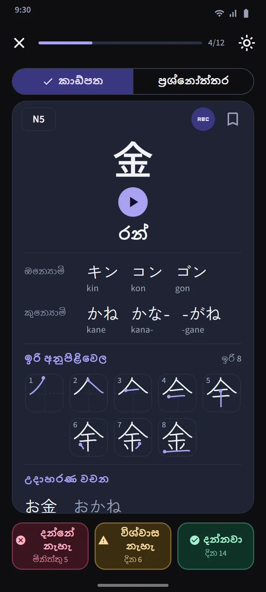

ජපන් පාසල් පිළිවෙළට කන්ජි 25ක කට්ටල
කන්ජි පටිත්ත JLPT මට්ටම අනුව, ඉන්පසු කන්ජි 25ක් පමණ වන කට්ටලවලට බෙදා ඇත. මට්ටමක් තුළ පිළිවෙළ ජපන් පාසල් විෂය මාලාව අනුගමනය කරයි (1 ශ්රේණිය මුලින්ම), ඉන්පසු අඩුම ඉරි සංඛ්යාවේ සිට ඉහළට; අංක, සතියේ දින නම් සහ ඍතු වැනි එකට අයිති අනුපිළිවෙළවල් පිළිවෙළට තබා ඇත. සෑම කට්ටල පේළියක්ම එහි කන්ජි, ප්රගති තීරුවක්, දන්නා සහ ප්රගුණ කළ ගණන්, සහ “ප්රශ්න සූදානම්” ලේබලයක් හෝ නියමිත ගණන පෙන්වයි.
| මට්ටම | කන්ජි | ප්රවේශය |
|---|---|---|
| N5 | 103 | නොමිලේ |
| N4 | 181 | නොමිලේ |
| N3 | 370 | Premium |
| N2 | 369 | Premium |
| N1 | 1,207 | Premium |


කන්ජි කාඩ් සහ ප්රශ්නෝත්තර
කාඩ්පතේ ඉදිරිපස කන්ජිය පමණි. පිටුපස: අර්ථ, ඔන් සහ කුන් කියවීම් (ඔබට අවශ්ය නම් රෝමාජි සමඟ), ඉරකට එක රාමුවක් සහ ආරම්භක ලක්ෂ්යය සලකුණු කළ ඉරි අනුපිළිවෙළ රූපසටහනක්, සහ එය භාවිත කරන උදාහරණ වචන. වචන කාඩ්පත්වල ඇති බොත්තම් තුනම එය නැවත සැලසුම් කරයි.
කට්ටලයක ප්රශ්නෝත්තරය විවෘත වන්නේ දන්නවා හෝ ප්රගුණ කළ කන්ජි 10ක් ඇති විටය, ප්රශ්න වර්ග තුනකින්: කන්ජියෙන් අර්ථයට, අර්ථයෙන් කන්ජියට සහ කන්ජියෙන් කියවීමට. ප්රගුණ කළ නීතිය එයමයි: වෙනස් දින තුනක ප්රශ්නෝත්තරවල නිවැරදි පිළිතුරු. පටිත්තේ ඉහළ ඇති කන්ජි පුනරීක්ෂණය සෑම කට්ටලයකම නියමිත වූ සියලු කන්ජි එක්රැස් කරන අතර, මිශ්ර ප්රශ්නාවලිය කට්ටල හරහා පරීක්ෂා කරයි.


කන්ජි විස්තරය සහ විශේෂ තට්ටු
සෑම කන්ජියක විස්තර පිටුවක්ම එහි අර්ථ, අදියර සහ ඊළඟ සමාලෝචනය, කියවීම්, ඉරි රූපසටහන සහ උදාහරණ වචන රඳවා ගනී; වචනයක විස්තර පිටුවක් එහි සංරචක කන්ජි වෙත සබැඳේ. වචන මෙන්ම, කන්ජිවලටද පිටු සලකුණු කළ, අපහසු සහ තත්පර 60 වේගවත් පුහුණුව තට්ටු ඇති අතර, මුල් පිටුවේ ඉක්මන් අභ්යාස කොටසේ ඇති ස්විචයක් එහි කොටු හතර කන්ජි අනුවාදවලට මාරු කරයි.


ඇඟිල්ලෙන් කන්ජි ලියන්න
ඔබ දැනටමත් දන්නා හෝ ප්රගුණ කළ කන්ජි ලිවීමෙන් පුහුණු විය හැක: අර්ථය සහ කියවීම් පමණක් පෙන්වයි, ඔබ ඉරෙන් ඉර ලියයි, සෑම ඉරක්ම හැඩය, දිශාව සහ පිළිවෙළ සඳහා පරීක්ෂා කෙරේ, අන්තර්ජාලයෙන් තොරව. ක්රම තුනකි: මතකයෙන්, සෙවණැල්ල සමඟ, සහ පිළිවෙළට තට්ටු කරන්න. කන්ජියක් “ලිවිය හැකි” යැයි ගණන් ගැනෙන්නේ ඔබ වෙනස් දින දෙකකදී සහායකින් තොරව මතකයෙන් එය ලියූ පසුවය.


කන්ජි හැඳින්වීම
කන්ජි මතක තබා ගැනීම අරඹන්නට පෙර කන්ජි ක්රියා කරන ආකාරය ගැන කෙටි පාඩම් 11ක්: ඔන්යෝමි සහ කුන්යෝමි සහ ඒ ඒ එක භාවිත වන විට, ඔකුරිගනා, っ සහ රෙන්ඩකු වැනි වෙනස් වන ශබ්ද, සම්පූර්ණ වචන ලෙස ඉගෙන ගන්නා උච්චාරණ, රැඩිකල් සහ ඉරි අනුපිළිවෙළ. මුල් පිටුවේ "ජපන් භාෂාවේ මූලික කරුණු" කොටසින් විවෘත වන අතර නොමිලේ.
දත්ත මූලාශ්ර
අර්ථ සහ කියවීම් KANJIDIC (Electronic Dictionary Research and Development Group) වෙතින් ද, ඉරි අනුපිළිවෙළ KanjiVG වෙතින් ද පැමිණෙන අතර, දෙකම CC BY-SA බලපත්ර යටතේ ඇත. කන්ජි මට්ටම් පැරණි JLPT ලැයිස්තු මත පදනම් වූ ඇස්තමේන්තුවකි; වත්මන් JLPT නිල කන්ජි ලැයිස්තුවක් ප්රකාශයට පත් නොකරයි.